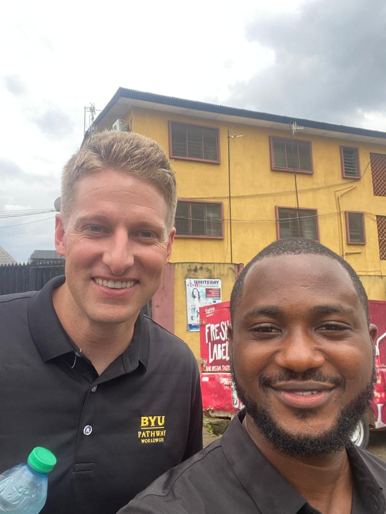

Stanley Ebuka Udenwa | WDD 130
Hello! Stanley is a fashion designer from Nigeria who fell in love with sewing early. What started as a hobby became a way for me to express myself and build something real. I learned through trial and error, long nights, and a lot of patience. Today, my designs reflect where I'm from. Practical, bold, and made with care. For Stanley, every stitch tells part of my story and my journey.